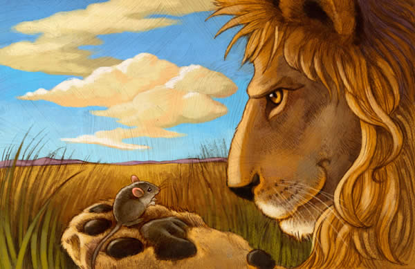

El león y el ratón
Había una vez un pequeño ratón que vivía en el bosque. Un día, mientras exploraba, se encontró con un león atrapado en una red.
El ratón se acercó y, con sus pequeños dientes, comenzó a roer la red hasta que finalmente liberó al león. El león le agradeció al ratón y prometió que le devolvería el favor algún día.
Unos meses después, el ratón estaba en peligro, siendo perseguido por un cazador. El león, que escuchó los gritos del ratón, corrió en su ayuda y ahuyentó al cazador.
Desde ese día, el ratón y el león se convirtieron en amigos y vivieron juntos en armonía en el bosque.
Moral de la historia: La amistad no depende del tamaño, y un pequeño acto de amabilidad puede traer grandes recompensas.
